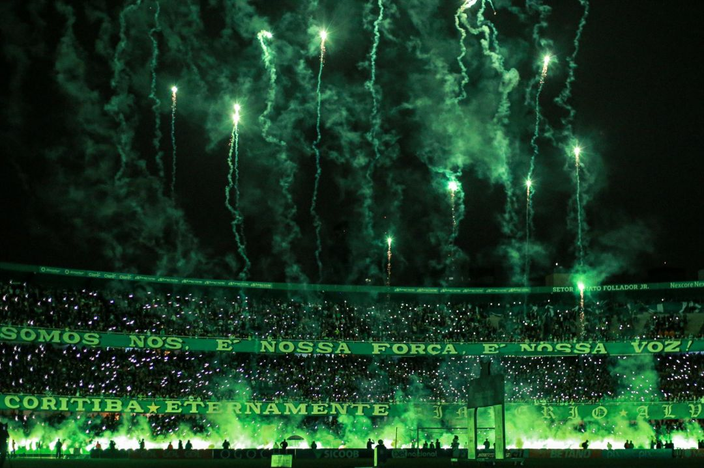

O Coritiba Futebol Clube,é da cidade de Curitiba,no Parana,e foi fundado por alemães.
É o mais antigo dentre os times do Paraná,sendochamado pelos torcedores de Coxa.Fundado em 12 de outubro de 1909.
O Coritiba sai na dianteira como melhor time do Paraná,e sendo o time favorito pelos moradores de Curitiba.
O Coritiba também é o lider co mais títulos do Paraná com 39 títulos oficiais,seguido do Athletico com 27.
A unica vez que o Athletico consegue passar o Coxa,é em numero de torcida,o Coxa te, a segunda maior torcida do Paraná
Frederico Essenfelder, o Fritz, que residira um tempo em Pelotas, no Rio Grande do Sul, apareceu com o objeto da moda por lá: uma bola de futebol.Em 1909, um grupo de jovens se reunia no Clube Ginástico Teuto-Brasileiro Turnverein, onde a comunidade de imigrantes alemães de Curitiba se reunia para jogar uma variedade de Esportes.O apelido Coxa-Branca (atualmente também apenas Coxa) teve origem na discriminação que os descendentes de alemães sofriam na primeira metade do século passado no Brasil, principalmente no período da Segunda Guerra Mundial, quando esses imigrantes eram vistos por algumas pessoas como inimigos infiltrados no país.
O apelido Coxa-Branca (atualmente também apenas Coxa) teve origem na discriminação que os descendentes de alemães sofriam na primeira metade do século passado no Brasil, principalmente no período da Segunda Guerra Mundial, quando esses imigrantes eram vistos por algumas pessoas como inimigos infiltrados no país.
Hoje, é na figura de um velhinho de traços germânicos que a família coritibana representa o Clube: o nosso Vovô Coxa. O simpático personagem foi escolhido como mascote por representar bem as tradições da equipe mais antiga do Paraná.
A araucária é um ícone paranaense. Majestosa e imponente, com seus galhos dispostos de maneira raiada, essa árvore situa-se no topo do novo escudo. Os pinhões simbolizam as sementes de amor ao Coritiba plantadas por nossos antepassados em nossos corações por gerações.
